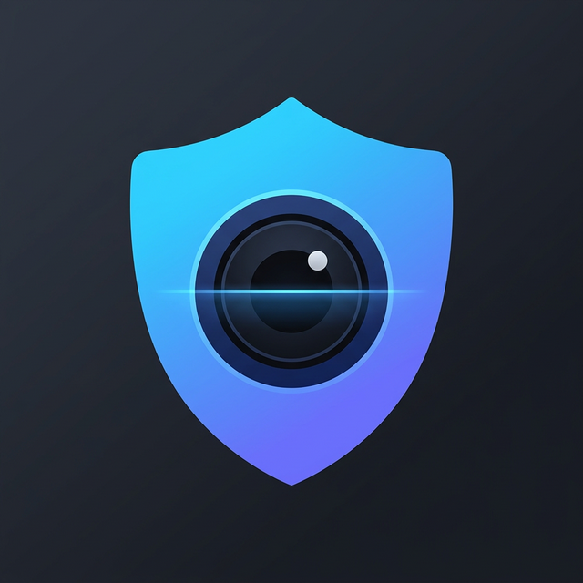
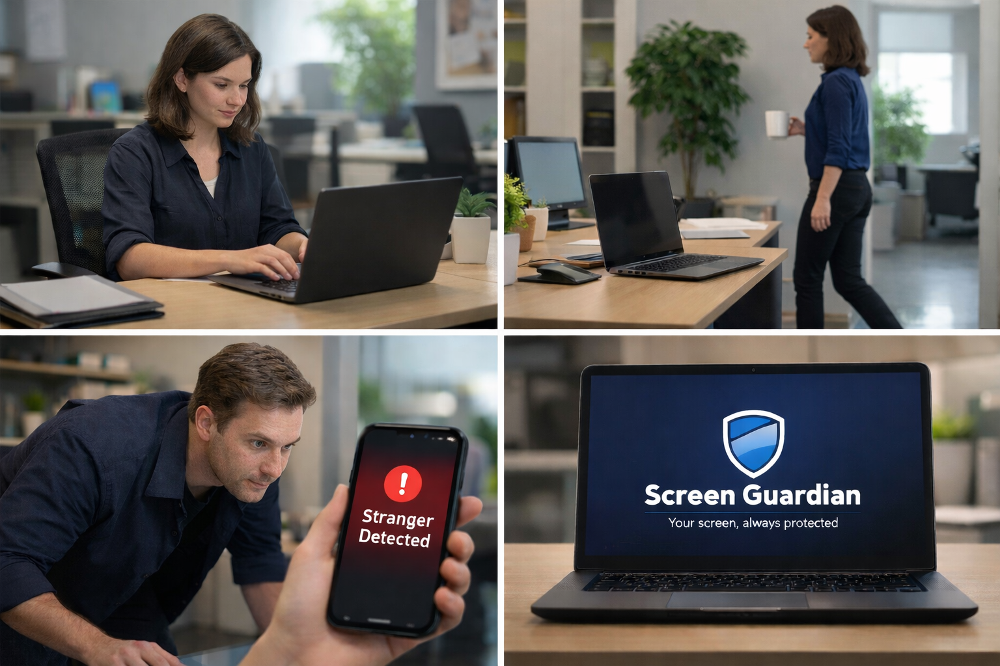

Screen Guardian protects your laptop from prying eyes the moment you step away. Smart detection. Instant alerts. 100% private.
Get Screen Guardian
Whether you're grabbing coffee or stepping into a meeting, Screen Guardian keeps watch so you don't have to.
Detects unfamiliar faces instantly when you're away from your laptop.
Automatically activates when your phone or watch leaves Bluetooth range.
Get real-time notifications on your phone if someone tries to access your screen.
Everything runs locally on your device. No cloud uploads. No spying.
Review security events securely. Auto-deleted after 7 days.
Designed to run efficiently without slowing down your system.
Screen Guardian processes everything locally on your device. Face data, logs, and images never leave your computer. Encrypted storage. Secure system vault. Zero cloud dependency.
Take control of your privacy and protect your laptop wherever you work.
Download Now